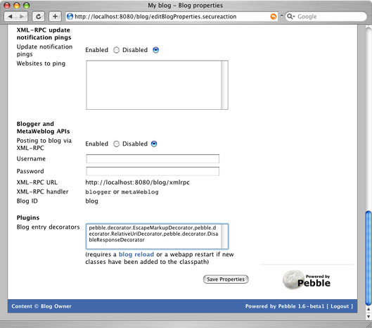

|
Blog entry decorators are a type of Pebble plugin that allow you to extend the way that
blog entries are displayed in the HTML pages of your blog and the XML newsfeeds that are
generated. The following features have been externalized into decorators and are included
in the distribution.
- EscapeMarkupDecorator - escapes HTML markup between <escape> tags (like this except that the tags are maintained and simply decorated out at runtime)
- RelativeUriDecorator - replaces relative URIs with absolute URLs so that they are rendered properly in browsers and newsreaders (Pebble currently does this but it's hardcoded)
- DisableResponseDecorator - disables comments and TrackBacks for the blog entry (useful if you are worried about spam when you don't have access to your blog, such as on holiday)
To write your own custom decorator, you need to write a Java class that implements the pebble.decorator.BlogEntryDecorator interface. A
default implementation is also available to subclass from called pebble.decorator.BlogEntryDecoratorSupport.
The code for the DisableResponseDecorator is shown here as an example.
package pebble.decorator;
import pebble.blog.BlogEntry;
/**
* Disables comments and TrackBacks for the blog entry.
*
* @author Simon Brown
*/
public class DisableResponseDecorator extends BlogEntryDecoratorSupport {
/**
* Executes the logic associated with this decorator.
*
* @param blogEntry the BlogEntry to run against
* @param context the context in which the decoration is running
* @throws BlogEntryDecoratorException
* if something goes wrong when running the decorator
*/
public void decorate(BlogEntry blogEntry, BlogEntryDecoratorContext context)
throws BlogEntryDecoratorException {
blogEntry.setCommentsEnabled(false);
blogEntry.setTrackBacksEnabled(false);
}
/**
* Gets the name of this decorator.
*
* @return the name of this decorator as a String
*/
public String getName() {
return "Disable response decorator";
}
}
To use your decorator, you must add your compiled class to the classpath of the Pebble web application. To do this,
either place the class file(s) underneath the /WEB-INF/classes directory or inside a JAR file
placed underneath the /WEB-INF/lib directory. Next, log in to your blog, click the Blog properties
and enter the fully qualified class name in the Blog entry decorators section towards the bottom of the page.

After saving the blog properties, click the Reload blog link so that the new plugin is started. If you've added
new classes to the web application classpath, you'll need to restart the web application so that they are
picked up by the servlet container.
|